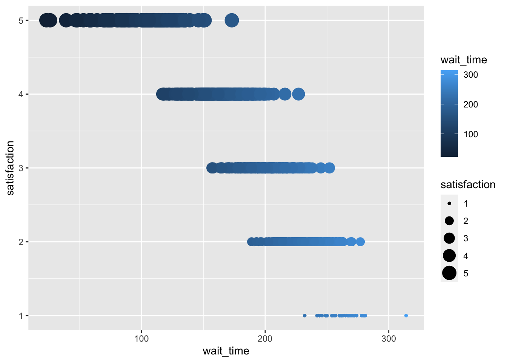

typeof(10) # double [1] "double"typeof(10.0) # double [1] "double"typeof(10L) # integer[1] "integer"Hanan Yafai
February 27, 2023
The different type of data:
Example:
[1] "double"[1] "double"[1] "integer"# r will assume that all numbers are double unless you add L to get rid of the dismal EX. (age)
typeof(10L)[1] "integer"[1] "double"Categorical:
Example:
x <- c(-3, 0, .5) # numeric vector
f <- factor(x) # convert to factor
x == as.numeric(f) # does not convert back to numeric [1] FALSE FALSE FALSEIs a format for data that maps the meaning onto the structure.
Tidy data has three rules:
Each [variable] must have its own column
Each [observation] must have its own row
Each [value] must have its own cell
Example of tidy data :
customer_id year items price_per_item totalprice
1 1 2018 2 3.91 7.82
2 1 2019 8 4.72 37.76
3 1 2020 10 5.59 55.90
4 2 2018 1 3.91 3.91
5 2 2019 6 4.72 28.32
6 2 2020 1 5.59 5.59
7 3 2018 4 3.91 15.64
8 3 2019 5 4.72 23.60
9 3 2020 5 5.59 27.95
10 4 2018 10 3.91 39.10
11 4 2019 1 4.72 4.72
12 4 2020 3 5.59 16.77
13 5 2018 3 3.91 11.73
14 5 2019 9 4.72 42.48
15 5 2020 8 5.59 44.72Example of untidy data :
customer_id itemsprice_2018 itemsprice_2019 itemsprice_2020 totalprice_2018
1 1 2 (3.91) 8 (4.72) 10 (5.59) 7.82
2 2 1 (3.91) 6 (4.72) 1 (5.59) 3.91
3 3 4 (3.91) 5 (4.72) 5 (5.59) 15.64
4 4 10 (3.91) 1 (4.72) 3 (5.59) 39.10
5 5 3 (3.91) 9 (4.72) 8 (5.59) 11.73
totalprice_2019 totalprice_2020
1 37.76 55.90
2 28.32 5.59
3 23.60 27.95
4 4.72 16.77
5 42.48 44.72Plotting the data:
The layer concepts:
First, the plot space is built (layer 1); the variables are specified (layer 2); the type of visualization (known as a geom) that is desired for these variables is specified (layer 3).
geom_point()is called to visualize individual data points; a second geom is added to include a line of best fit (layer 4), the axis labels are edited for readability (layer 5), and finally, a theme is applied to change the overall appearance of the plot (layer 6).
ggplot example:
caller_id employee_id call_start wait_time call_time issue_category
1 C001 E01 2020-09-22T10:47:54Z 169 34 tech
2 C002 E01 2020-09-07T22:10:25Z 206 52 tech
3 C003 E01 2020-07-06T12:08:59Z 207 41 tech
4 C004 E01 2020-02-20T13:12:03Z 132 16 tech
5 C005 E01 2020-11-08T17:42:10Z 178 20 returns
6 C006 E01 2020-06-01T19:06:12Z 230 46 returns
satisfaction
1 3
2 2
3 2
4 4
5 3
6 2library(ggplot2)
ggplot(data = survey_data,
mapping = aes(x=wait_time,
y= satisfaction,
color= wait_time,
size= satisfaction)) +
geom_point()
Tips:
geom_smooth(method = “lm”) ggplot(data = survey_data, mapping = aes(x=wait_time, ))
|fig-width:
glimpse (starwars_copy)